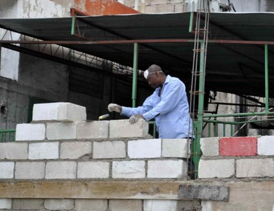
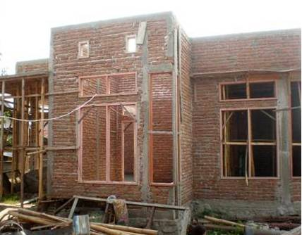

Masonry, confined [MCF]
Masonry construction where masonry walls are first laid and then reinforced columns and beams are cast. In this type of construction the concrete bonds to the masonry and the small-size columns and beams (called tie-columns and tie-beams) confine masonry wall panels. This material type is associated with the Wall lateral load-resisting system since the masonry bears gravity and lateral loads and the slender columns and beams do not constitute rigid frames but rather function as confining members. Construction where columns and beams are constructed before the masonry walls are laid is classified as an Infilled Frame or an Infilled Flat Slab/Plate.

Confined masonry construction, showing that masonry walls are constructed first, followed by reinforced concrete confining elements (T. Schacher)

A confined masonry building can be recognized by toothing, that is, interface between concrete and masonry wall as shown on the left photo; this is unlike reinforced concrete frame, where frame is constructed first and there is no toothing. However, confined masonry in some countries (e.g. Argentina and Indonesia) is practiced without toothing (T. Schacher)

Confined masonry under construction using concrete blocks, Haiti (B. Benjamin)

Confined masonry wall under construction using clay brick units, Chile (S. Brzev)

Confined masonry building, Mexico (S. Brzev)

Confined masonry construction, Indonesia (J. Bothara)

Confined stone masonry construction, Algeria (M. Farsi)